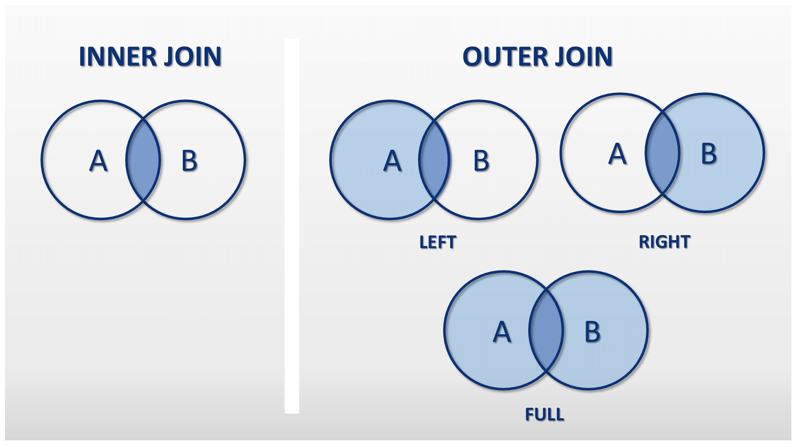
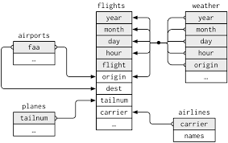
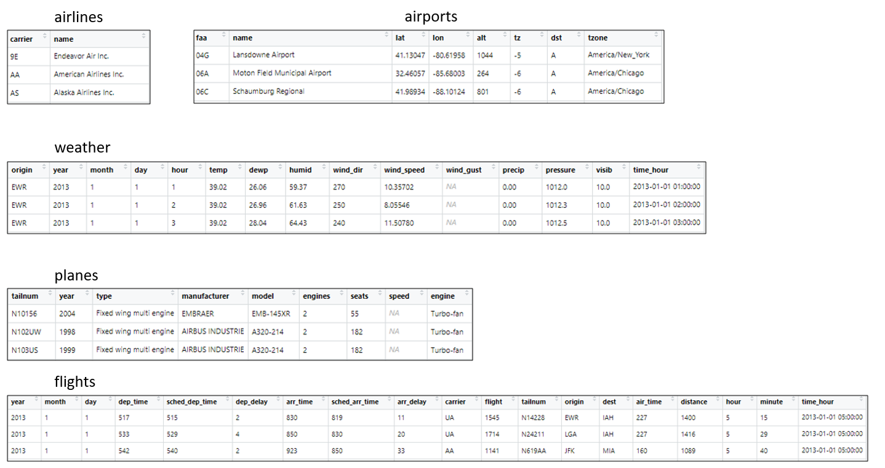

Chapitre 11 Jointures9
11.1 Principe
Les jointures permettent d’associer plusieurs tables dans une même requête. Cela permet d’exploiter la puissance des bases de données relationnelles pour obtenir des résultats qui combinent les données de plusieurs tables de manière efficace.
En général, les jointures consistent à associer des lignes de 2 tables en associant l’égalité des valeurs d’une colonne d’une première table par rapport à la valeur d’une colonne d’une seconde table.
Imaginons qu’une base de 2 données possède une table “utilisateur” et une autre table “abonnement” qui contient des informations sur les comptes de ces utilisateurs.
Voici la table utilisateur :
| Id_utilisateur | Name | Age |
|---|---|---|
| 1 | Luca | 18 |
| 2 | Martin | 20 |
| 3 | Mélanie | 22 |
| 4 | François | 21 |
Voici la table abonnement :
| Id_utilisateur | Like | Share |
|---|---|---|
| 1 | 24 | 5 |
| 2 | 66 | 0 |
| 4 | 8 | 11 |
| 5 | 34 | 27 |
Imaginons qu’une base de 2 données possède une table “utilisateur” et une autre table “abonnement” qui contient les informations du nombre de pages aimées et partagées de ces utilisateurs. Avec une jointure, il est possible d’obtenir les données des deux tables.
11.2 Types de jointures
Il y a plusieurs types de jointures pour associer 2 tables ensemble. Voici la liste des 4 principales :
INNER JOIN : jointure interne pour retourner les enregistrements quand la condition est vrai dans les 2 tables. C’est l’une des jointures les plus communes.
LEFT JOIN (ou LEFT OUTER JOIN) : jointure externe pour retourner tous les enregistrements de la table de gauche (LEFT = gauche) même si la condition n’est pas vérifié dans l’autre table.
RIGHT JOIN (ou RIGHT OUTER JOIN) : jointure externe pour retourner tous les enregistrements de la table de droite (RIGHT = droite) même si la condition n’est pas vérifié dans l’autre table.
FULL JOIN (ou FULL OUTER JOIN) : jointure externe pour retourner les résultats quand la condition est vrai dans au moins une des 2 tables.

La fonction merge (du package base chargé par défaut dans RStudio) permet de réaliser ces 4 types de jointures. Cette fonction admet différents arguments selon la structure des deux tables à joindre :
x,y: le nom des deux tables à joindreby: le nom de la colonne commune jouant le rôle de clé primaire / étrangèreby.x,by.y: le nom de chaque colonne jouant le rôle de clé primaire / étrangère si elles n’ont pas le même nomall: par défautFALSEpour réaliser une inner join,TRUEpour une full joinall.x: par défautFALSE,TRUEpour réaliser une left joinall.y: par défautFALSE,TRUEpour réaliser une right join
Le package dplyr permet également de réaliser des jointures avec les fonctions left_join, right_join, full_join, inner_join et d’aller plus loin. Les fonctions de jointure de dplyr ont un temps de traitement plus rapide que celles proposées par la fonction merge. Nous comparerons les deux méthodes dans la correction de l’exercice.
11.2.1 Left Join
| Id_utilisateur | Name | Age | Like | Share |
|---|---|---|---|---|
| 1 | Luca | 18 | 24 | 5 |
| 2 | Martin | 20 | 66 | 0 |
| 3 | Mélanie | 22 | NA | NA |
| 4 | François | 21 | 8 | 11 |
En réalisant une jointure externe gauche, on observe :
- qu’on retrouve les informations des deux tables pour les id_utilisateur 1,3 et 4.
- qu’on ne retrouve pas l’id_utilisateur 5 dans la table de sortie n’étant pas présent dans la table Utilisateur.
- la présence de
NApour l’id_utilisateur 3 car il n’etait pas présent dans la table Abonnement.
11.2.2 Right Join
| Id_utilisateur | Name | Age | Like | Share |
|---|---|---|---|---|
| 1 | Luca | 18 | 24 | 5 |
| 2 | Martin | 20 | 66 | 0 |
| 4 | François | 21 | 8 | 11 |
| 5 | NA | NA | 34 | 27 |
En réalisant une jointure externe droite, on observe :
- qu’on retrouve les informations des deux tables pour les id_utilisateur 1,2 et 4.
- qu’on ne retrouve pas l’id_utilisateur 3 dans la table de sortie n’étant pas présent dans la table Abonnement
- la présence de
NApour l’id_utilisateur 5 car il n’etait pas présent dans la table Utilisateur.
11.2.3 Inner Join
| Id_utilisateur | Name | Age | Like | Share |
|---|---|---|---|---|
| 1 | Luca | 18 | 24 | 5 |
| 2 | Martin | 20 | 66 | 0 |
| 4 | François | 21 | 8 | 11 |
En réalisant une jointure interne, on observe :
- qu’on retrouve les informations des deux tables pour les id_utilisateur 1,2 et 4.
- qu’on ne retrouve pas l’id_utilisateur 3 et 5 dans la table de sortie n’étant pas présents dans l’une des deux tables.
11.2.4 Full Join
| Id_utilisateur | Name | Age | Like | Share |
|---|---|---|---|---|
| 1 | Luca | 18 | 24 | 5 |
| 2 | Martin | 20 | 66 | 0 |
| 3 | Mélanie | 22 | NA | NA |
| 4 | François | 21 | 8 | 11 |
| 5 | NA | NA | 34 | 27 |
En réalisant une jointure externe, on observe :
- qu’on retrouve les informations des deux tables pour les id_utilisateur 1,2 et 4.
- la présence de
NApour l’id_utilisateur 3 et 5 n’étant pas présents dans l’une des deux tables.
11.3 Exercice
Pour illustrer ces notions, on utilise la base de données nycflights13 du même package. La base de données est répartie en 5 tables et disponible à partir du package nycflights13 :
- table
flights(336776 x 20) : une ligne décrit un vol - table
airlines(16 x 2) : une ligne décrit une compagnie - table
airports(1458 x 8) : une ligne décrit un aéroport - table
planes(3322 x 9) : une ligne décrit un appareil - table
weather(26115 x 15) : une ligne décrit les conditions météorologiques au départ d’un vol avec une mesure par heure
Voici le modèle relationnel de ces 5 tables :


11.3.1 Sujet
- Affichez le nom des 3 compagnies avec le plus de vols.
| name | nb_vols |
|---|---|
| United Air Lines Inc. | 58665 |
| JetBlue Airways | 54635 |
| ExpressJet Airlines Inc. | 54173 |
- Affichez le nombre de vols à destination de chaque
tzone(tableairports).
| tzone | nb_vols |
|---|---|
| America/New_York | 192377 |
| America/Chicago | 74811 |
| America/Los_Angeles | 46324 |
| America/Denver | 10291 |
| NA | 7602 |
| America/Phoenix | 4656 |
| Pacific/Honolulu | 707 |
| America/Anchorage | 8 |
On observe que la catégorie NA signifie que certaines destinations ne sont pas référencées dans la table airports.
- Dans quel aéroport y a-t-il le plus de précipitations ?
| origin | precip_moy |
|---|---|
| EWR | 0.0050923 |
| JFK | 0.0037549 |
| LGA | 0.0042967 |
Pour obtenir ce résultat, on utilise la fonction distinct du package dplyr après la jointure.
11.3.2 Correction
- Affichez le nom des 3 compagnies avec le plus de vols.
#jointure sans dplyr
start.time <- Sys.time()
requete <- merge(x = flights,y = airlines, by = "carrier",all.x = TRUE)
Sys.time() - start.time## Time difference of 2.243398 secs#jointure avec dplyr
start.time <- Sys.time()
requete <- left_join(x = flights, y = airlines, by = "carrier")## Warning: Column `carrier` joining factor and character vector, coercing
## into character vector## Time difference of 0.158848 secsrequete %>%
group_by(name) %>%
summarise(nb_vols = n()) %>%
arrange(desc(nb_vols)) %>%
slice(1:3) %>%
kable()| name | nb_vols |
|---|---|
| United Air Lines Inc. | 58665 |
| JetBlue Airways | 54635 |
| ExpressJet Airlines Inc. | 54173 |
- Affichez le nombre de vols à destination de chaque
tzone(tableairports).
#jointure sans dplyr
start.time <- Sys.time()
requete <- merge(x = flights,y = airports[,c("faa","tzone")],
by.x = "dest", by.y = "faa", all.x = TRUE)
Sys.time() - start.time## Time difference of 0.893326 secs#jointure avec dplyr
start.time <- Sys.time()
requete <- left_join(x = flights,
y = select(airports, c("faa","tzone")),
by = c("dest" = "faa"))## Warning: Column `dest`/`faa` joining factor and character vector, coercing
## into character vector## Time difference of 0.145843 secs| tzone | nb_vols |
|---|---|
| America/New_York | 192377 |
| America/Chicago | 74811 |
| America/Los_Angeles | 46324 |
| America/Denver | 10291 |
| NA | 7602 |
| America/Phoenix | 4656 |
| Pacific/Honolulu | 707 |
| America/Anchorage | 8 |
On observe que la catégorie NA signifie que certaines destinations ne sont pas référencées dans la table airports.
- Dans quel aéroport y a-t-il le plus de précipitations ?
#jointure sans dplyr
start.time <- Sys.time()
requete <- merge(x = flights, y = weather,
by = c("year" = "year", "month" = "month", "day" = "day",
"hour" = "hour" , "origin" = "origin"), all.x = TRUE)
Sys.time() - start.time## Time difference of 1.690838 secs#jointure avec dplyr
start.time <- Sys.time()
requete <- left_join(x = flights, y = weather,
by = c("year" = "year", "month" = "month", "day" = "day",
"hour" = "hour" , "origin" = "origin"))## Warning: Column `origin` joining factor and character vector, coercing into
## character vector## Time difference of 0.2716389 secsrequete %>%
select(year, month, day, hour, origin, origin, precip) %>%
distinct() %>%
group_by(origin) %>%
summarise(precip_moy = mean(precip,na.rm = TRUE)) %>%
kable()| origin | precip_moy |
|---|---|
| EWR | 0.0050923 |
| JFK | 0.0037549 |
| LGA | 0.0042967 |
Extrait du site sql.sh - https://sql.sh/cours/jointures↩︎